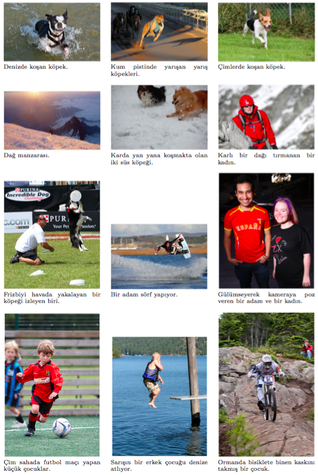

TasvirEt: A Benchmark Dataset for Automatic Turkish Description Generation from Images
24. IEEE Sinyal İşleme ve İletişim Uygulamaları Kurultayı (SIU 2016)
Mesut Erhan Unal1 Begum Citamak1 Semih Yagcioglu1 Aykut Erdem1 Erkut Erdem1 Nazli Ikizler Cinbis1 Ruket Cakici2
1Hacettepe University Computer Vision Lab (HUCVL)
Dept. of Computer Engineering, Hacettepe University, Ankara, TURKEY
2Dept. of Computer Engineering, Middle East Technical University, Ankara, TURKEY
Abstract
Automatically describing images with natural sentences is considered to be a challenging research problem that has recently been explored. Although the number of methods proposed to solve this problem increases over time, since the datasets used commonly in this field contain only English descriptions, the studies have mostly been limited to single language, namely English. In this study, for the first time in the literature, a new dataset is proposed which enables generating Turkish descriptions from images, which can be used as a benchmark for this purpose. Furthermore, two approaches are proposed, again for the first time in the literature, for image captioning in Turkish with the dataset we named as TasvirEt. Our findings indicate that the new Turkish dataset and the approaches used here can be successfully used for automatically describing images in Turkish.
Özetçe
Görüntülerin doğal cümlelerle otomatik olarak tasvir edilmesi literatürde çok yakın zamanlarda incelenmeye başlanmış olan ve son derece zorlu kabul edilen bir araştırma problemidir. Bu problemin çözümüne yönelik ortaya konan yaklaşımların sayısının giderek artmasına rağmen bu alanda yaygın olarak kullanılan veri kümelerinin sadece İngilizce açıklamalar içermeleri nedeniyle bu çalışmalar büyük ölçüde tek dillidir ve İngilizce ile kısıtlı kalmıştır. Bu çalışmada, literatürde ilk kez görüntülerden Türkçe açıklamalar yaratmaya imkan veren ve bu amaçla denektaşı olarak kullanılabilecek yeni bir veri kümesi sunulmaktadır. TasvirEt adını verdiğimiz bu veri kümesi üzerinde, yine literatürde ilk kez Türkçe görüntü altyazılama amacıyla kullanılabilecek iki yaklaşım da önerilmektedir. Elde edilen deneysel sonuçlar bu veri kümesinin ve önerilen yaklaşımların görüntülerin otomatik olarak Türkçe tasvir edilmesinde başarılı şekilde kullanılabileceğini göstermektedir.
Paper
siu16_tasviret.pdf (1.6MB)Supplementary Material
Slides tasviret-slides-siu2016.pdf (2.3MB)Project Page tasviret.cs.hacettepe.edu.tr
Data - Download Turkish captions for Flickr8K dataset
Results
|  |
Citation
M. E. Unal, B. Citamak, S. Yagcioglu, A. Erdem, E. Erdem, N. Ikizler Cinbis and R. Cakici. TasvirEt: Görüntülerden Otomatik Türkçe Açıklama Oluşturma İçin Bir Denektaşı Veri Kümesi (TasvirEt: A Benchmark Dataset for Automatic Turkish Description Generation from Images). 24. IEEE Sinyal İşleme ve İletişim Uygulamaları Kurultayı (SIU 2016), Zonguldak, Mayis 2016
Bibtex
@inproceedings{unaltasviret,
title={TasvirEt: A Benchmark Dataset for Automatic Turkish Description Generation from Images},
author={Unal, Mesut Erhan and Citamak, Begum and Yagcioglu, Semih and Erdem, Aykut and Erdem, Erkut and Ikizler Cinbis, Nazli and Cakici, Ruket},
booktitle={Signal Processing and Communications Applications Conference (SIU), 2016 24th},
pages=,
year=,
organization=}
Acknowledgments
This research was supported in part by The Scientific and Technological Research Council of Turkey (TUBITAK) and COST programme, with award no 113E116.
Contact
For comments and questions, please contact Semih Yagcioglu.
Copyright
The documents contained in these directories are included by the contributing authors as a means to ensure timely dissemination of scholarly and technical work on a non-commercial basis. Copyright and all rights therein are maintained by the authors or by other copyright holders, notwithstanding that they have offered their works here electronically. It is understood that all persons copying this information will adhere to the terms and constraints invoked by each author's copyright. These works may not be reposted without explicit permission of the copyright holder.